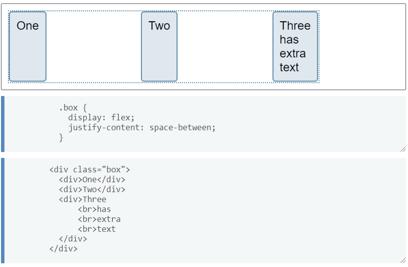

Flex Box (Cajas flexibles)
El diseño CSS Flexbox es un módulo CSS que define un modelo de caja y está optimizado para el diseño de la interfaz de usuario. En el diseño flexible, los nodos secundarios se pueden colocar vertical u horizontalmente, y su tamaño puede ser "flexible", ya sea llenando el espacio disponible o reduciéndose para evitar desviarse del límite del nodo principal. Puede manipular fácilmente la alineación horizontal y vertical de los nodos secundarios. El anidamiento de estas cajas (horizontal en vertical o vertical en horizontal) se puede utilizar para construir un diseño bidimensional. En el siguiente ejemplo, un contenedor se define como display: flex, lo que significa que los tres elementos secundarios se convierten en elementos flexibles. El valor de justify-content se ha establecido en space-between para espaciar uniformemente los elementos en el eje principal. Se coloca una cantidad igual de espacio entre cada elemento, y los elementos izquierdo y derecho se alinean con los bordes del contenedor flexible. También puede ver que los elementos se estiran en el eje transversal, porque el valor predeterminado de align-items está estirado. Los elementos se extienden hasta la altura del contenedor flexible, por lo que cada elemento es tan alto como el elemento más alto. (by MDN contributors, 2021).

Imagen 1. Ejemplo. Tomada de https://developer.mozilla.org/es/docs/Web/CSS/CSS_Flexible_Box_Layout (2021).